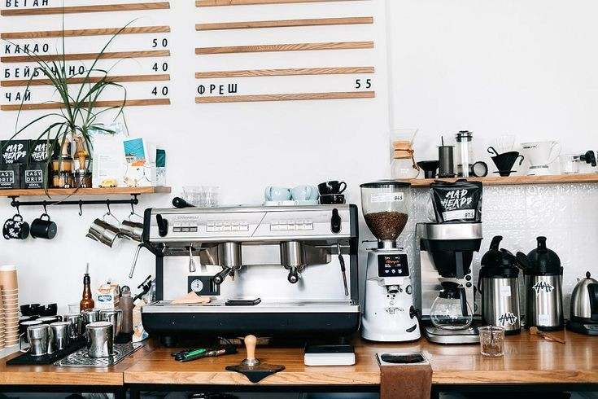

Welcome to our dream cafe an online space created from a passion for cozy corners, comforting drinks, and the warm ambiance of a perfect coffee spot. Though our cafe isn't physical (yet!), this website is a reflection of a future we hope to bring to life. It's where we share our love for coffee, creativity, and connection. Every page, every design, and every drink on the menu is part of the vision for a place where people can relax, recharge, and feel at home. Thank you for being part of our story, one sip at a time.
This website was born from a shared dream among friends to one day open our own café. It all started during a casual conversation when one of us mentioned the desire to open a store in the future. That sparked something in all of us, as we realized we shared the same passion for having a cozy, welcoming café where people could gather, relax, and enjoy good coffee. Since we all love the idea of creating that space someday, we decided to make it the concept for our portfolio. It's a reflection of our vision, our creativity, and the future we hope to build together.
This is how we imagine our dream café will look one day modern, cozy, and filled with warmth. We picture a space where people can relax, connect, and enjoy quality coffee in a stylish yet welcoming atmosphere. It's more than just a place to eat or drink it's a vision of what we hope to build together in the future.
One day, we hope to own machines like these—powerful, sleek, and ready to brew not just coffee, but creativity. With our own space and equipment, we’ll finally get the chance to experiment with new drink recipes, try out exciting flavors, and serve every cup with love and personality. It's not just about making coffee—it's about creating moments, sharing passion, and building something we can truly call our own.